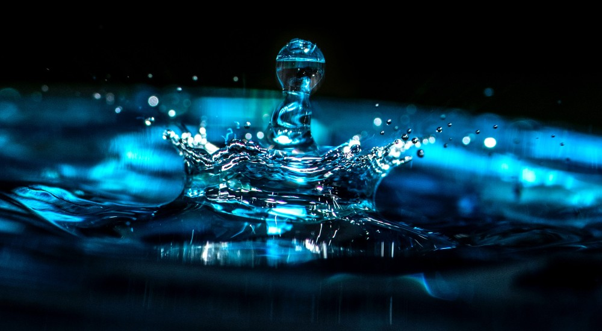

AGUA
El agua cubre el 71% de la superficie de la corteza terrestre. Se localiza principalmente en los oceanos,donde se concentra el 96.5%. A los glaciares y casquetes polares les corresponde el 1.74%, mientras que los depositos subterraneos (acuiferos), los permafrost y los glaciares continentales concentran en 1.72%. El restante 0.04% es el agua dulce diponible en el planeta, de la cual depende la vida en el mismo, que se reparte en orden decreciente entre lagos, humedad del suelo, atmosfera, embalses, rios y seres vivos. La vida en la Tierra esta directamente relacionada al agua. Las personas estan compuestas de agua corporal que varua del 45 al 73%.
La fórmula química del agua es H₂O, un átomo de oxígeno unido a dos de hidrógeno. La molécula de agua tiene una carga eléctrica positiva en un lado y una carga eléctrica negativa en el otro. Debido a que las cargas eléctricas opuestas se atraen, las moléculas de agua tienden a permanecer juntas.
Es la única sustancia que se puede encontrar en los tres estados de la materia (líquido, sólido y gas) de forma natural en la Tierra. El agua en su forma sólida, el hielo, es menos densa que la líquida, por eso el hielo flota. No tiene color, sabor ni olor.

El agua circula constantemente en un ciclo de evaporacion o transpiracion (evapotranspiracion), precipitacion y desplacamiento hacia el mar. Los vientos la transportan en las nubes, como vapor de agua, desde el mar y en sentido inverso tanta agua como la que se vierte desde los rios en los mares.